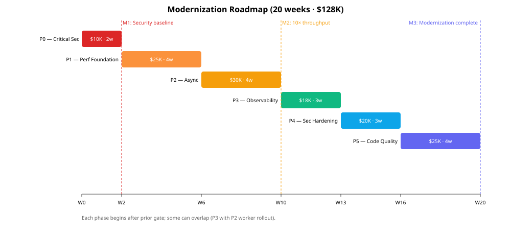

Modernization Strategy

| Phase | Scope | Weeks | Cost | Patterns |
|---|---|---|---|---|
| P0 — Critical Security | Remove secrets from repo, fix HTTP 200-on-error, scrub DB-user log | 2 | $10K | risk |
| P1 — Performance Foundation | Caching (Caffeine), HikariCP tuning, Resilience4j | 4 | $25K | modernization |
| P2 — Async Processing | Kafka topic, PDF worker pod, outbox | 4 | $30K | scalability |
| P3 — Observability | JSON logs, OpenTelemetry, custom metrics | 3 | $18K | observability |
| P4 — Security Hardening | Vault, mTLS, Spring Security on GET, VC verify default-on | 3 | $20K | evidence |
| P5 — Code Quality | Split god-services, enums, ≥80% coverage gate | 4 | $25K | tech synthesis |
Total: 20 weeks · $128K · delivers 10× throughput, security score 4.3→8.0, observability 5→8.5.